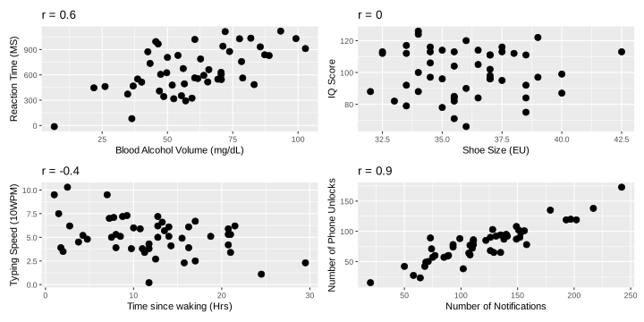
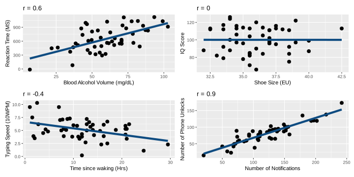
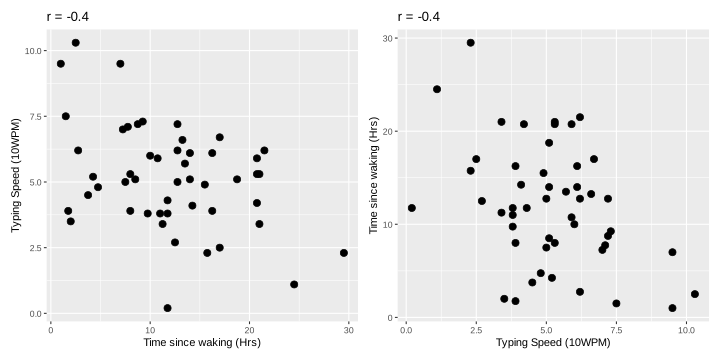
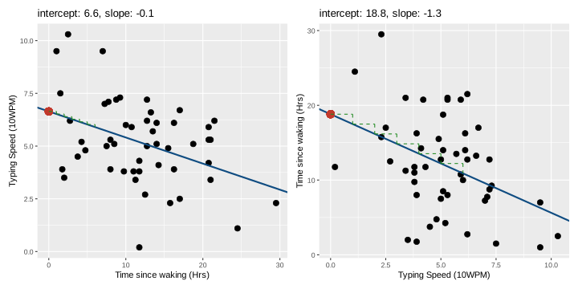
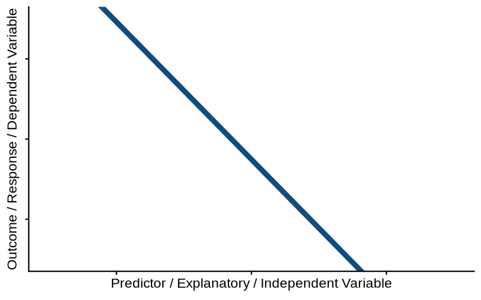

viewof linearModel = {
const width = 580;
const height = 320;
const margin = 50;
// init vals
let y1 = 20;
let y2 = 80;
const svg = d3.create("svg")
.attr("viewBox", [0, 0, width, height])
.style("border", "1px solid #ddd")
.style("background", "#fafafa");
// domains. x is -2 to 10, y is 0 to 11
const xScale = d3.scaleLinear().domain([-2, 10]).range([margin, width - margin]);
const yScale = d3.scaleLinear().domain([0, 100]).range([height - margin, margin]);
// axes
svg.append("g")
.attr("transform", `translate(0,${height - margin})`)
.call(d3.axisBottom(xScale).ticks(12));
svg.append("g")
.attr("transform", `translate(${xScale(0)},0)`)
.call(d3.axisLeft(yScale));
// make thicker line for dragging
const lineHitArea = svg.append("line")
.attr("stroke", "transparent")
.attr("stroke-width", 16)
.attr("cursor", "grab");
// make visible reg line
const line = svg.append("line")
.attr("x1", xScale(-2))
.attr("x2", xScale(10))
.attr("stroke", "#0F4C81")
.attr("stroke-width", 3)
.attr("pointer-events", "none");
// add rise run triangle
const slopeHorizontal = svg.append("line")
.attr("stroke", "#000000")
.attr("stroke-width", 2)
.attr("stroke-dasharray", "4,4");
const slopeVertical = svg.append("line")
.attr("stroke", "#000000")
.attr("stroke-width", 2)
.attr("stroke-dasharray", "4,4");
// intercept
const interceptMarker = svg.append("circle")
.attr("r", 5)
.attr("fill", "#27ae60");
// intercept circle
const handleLeft = svg.append("circle")
.attr("r", 6)
.attr("fill", "#c0392b")
.attr("cursor", "ns-resize");
// right hand drag point. invisible
const handleRight = svg.append("circle")
.attr("r", 15)
.attr("fill", "transparent")
.attr("cursor", "ns-resize");
// LABELS!
const labelRun = svg.append("text")
.attr("fill", "#000000")
.attr("font-size", "13px")
.attr("font-weight", "bold")
.attr("text-anchor", "middle");
const labelRise = svg.append("text")
.attr("fill", "#000000")
.attr("font-size", "13px")
.attr("font-weight", "bold");
const interceptText = svg.append("text")
.attr("fill", "#c0392b")
.attr("font-size", "13px")
.attr("font-weight", "bold");
function update() {
const slope = (y2 - y1) / 10;
const intercept = y1;
// calculate line and extend to x=-2
const yNeg2 = y1 + slope * (-2);
// update line pos
line.attr("x1", xScale(-2)).attr("y1", yScale(yNeg2))
.attr("x2", xScale(10)).attr("y2", yScale(y2));
lineHitArea.attr("x1", xScale(-2)).attr("y1", yScale(yNeg2))
.attr("x2", xScale(10)).attr("y2", yScale(y2));
// update dragpoint
handleLeft.attr("cx", xScale(0)).attr("cy", yScale(y1));
handleRight.attr("cx", xScale(10)).attr("cy", yScale(y2));
// update annotation labels
interceptMarker.attr("cx", xScale(0)).attr("cy", yScale(y1));
interceptText
.attr("x", xScale(0) + 12)
.attr("y", yScale(y1) + 4)
.text(`${intercept.toFixed(2)}`);
// put rise run triangle 3-4
const xStart = 3;
const xEnd = 4;
const yStart = y1 + slope * xStart;
const yEnd = y1 + slope * xEnd;
slopeHorizontal
.attr("x1", xScale(xStart)).attr("y1", yScale(yStart))
.attr("x2", xScale(xEnd)).attr("y2", yScale(yStart));
slopeVertical
.attr("x1", xScale(xEnd)).attr("y1", yScale(yStart))
.attr("x2", xScale(xEnd)).attr("y2", yScale(yEnd));
labelRun
.attr("x", (xScale(xStart) + xScale(xEnd)) / 2)
.attr("y", yScale(yStart) + (slope >= 0 ? 14 : -6))
.text("+1");
labelRise
.attr("x", xScale(xEnd) + 6)
.attr("y", (yScale(yStart) + yScale(yEnd)) / 2 + 4)
.text(`${slope >= 0 ? "+" : ""}${slope.toFixed(2)} y`);
svg.node().value = { slope, intercept, y1, y2 };
svg.node().dispatchEvent(new CustomEvent("input"));
}
// listeners for drags
const dragLeft = d3.drag().on("drag", (event) => {
y1 = Math.max(0, Math.min(100, yScale.invert(event.y)));
update();
});
const dragRight = d3.drag().on("drag", (event) => {
y2 = Math.max(0, Math.min(100, yScale.invert(event.y)));
update();
});
let dragStartMouseY = 0;
let dragStartY1 = 0;
let dragStartY2 = 0;
const dragLine = d3.drag()
.on("start", (event) => {
dragStartMouseY = event.y;
dragStartY1 = y1;
dragStartY2 = y2;
lineHitArea.attr("cursor", "grabbing");
})
.on("drag", (event) => {
const deltaY = yScale.invert(event.y) - yScale.invert(dragStartMouseY);
let newY1 = dragStartY1 + deltaY;
let newY2 = dragStartY2 + deltaY;
if (newY1 < 0) {
newY2 -= newY1;
newY1 = 0;
} else if (newY1 > 100) {
newY2 -= (newY1 - 100);
newY1 = 100;
}
if (newY2 < 0) {
newY1 -= newY2;
newY2 = 0;
} else if (newY2 > 100) {
newY1 -= (newY2 - 100);
newY2 = 100;
}
y1 = newY1;
y2 = newY2;
update();
})
.on("end", () => {
lineHitArea.attr("cursor", "grab");
});
handleLeft.call(dragLeft);
handleRight.call(dragRight);
lineHitArea.call(dragLine);
update();
return svg.node();
}example_lec
Data Analysis for Psychology in R 1
Josiah - josiah.king@ed.ac.uk
Psychology, PPLS
University of Edinburgh
Course Overview
| block 1 name | week 1 topic |
| week 2 topic | |
| week 3 topic | |
| week 4 topic | |
| week 5 topic | |
| block 2 name | week 7 topic |
| week 8 topic | |
| week 9 topic | |
| week 10 topic | |
| week 11 topic |
| block 3 name | week 1 topic |
| week 2 topic | |
| week 3 topic | |
| week 4 topic | |
| week 5 topic | |
| block 4 name | week 7 topic |
| week 8 topic | |
| week 9 topic | |
| week 10 topic | |
| week 11 topic |
This week
- quick recap
- straight lines
- outcome = model + error
- using models to answer questions
the story so far…
Block 1 - Exploratory Data Analysis
- We were “Exploratory” because we weren’t yet talking about research questions or hypotheses.
- More generally, think “how to summarise/visualise distributions”
- mean/median/mode
- variance/standard deviation
- counts/frequencies/proportions
All things we can use to specify questions!
| Has the average body temperature of healthy humans changed from the long-thought 37 °C? | mean \(\neq\) 37? |
| Are first year undergraduate students more optimistic than adults in general? | mean > 35? |
| TODO from EP lec 2 sample t test q | mean - mean \(\neq\) 0? |
| TODO from EP lec chi-squ test q | observed proportions - expected proportions \(\neq\) 0? |
| TODO from EP lec corr q | variance of XX coincide with variance of YY? |
block 2

TODO ask UN for key 2/3 bullet summary
block 3
testing relationships two variables - associations
TODO flowchart
straight lines
correlation
- take explanation from EP slides
correlation

correlation ++

what defines a line?
a shift in focus
correlations…

…lines

a line is a model of y
A subtle shift has happened!
We are moving to a framework in which we model an outcome

the only equation you’ll ever need
\[ \color{red}{\text{outcome}} = \color{blue}{\text{model}} + \color{black}{\text{error}} \]
<<< The \(\text{error}\) is the bit that makes it a statistical model
- ideally:
- \(\color{blue}{\text{model}}\) contains systematic patterns
- \(\color{black}{\text{error}}\) is just random leftover variation, unrelated to our model
the linear regression model
\[\begin{align} \color{red}{\text{outcome}} &= \color{blue}{\text{model}} &+& \color{black}{\text{error}} \\ \quad \\ \quad \\ \quad \\ \color{red}{y} &= \color{blue}{\underset{\underset{\text{intercept}}{\uparrow}}{b_0} + \underset{\underset{\text{slope}}{\uparrow}}{b_1} \cdot x} & +& \color{black}{\epsilon} \end{align}\]
lines
slide correlation++ with values of b0, b1 on them
aside - how it gets fitted
how does the model get fitted? 1. minimise resid SS (just an animation to show the idea of RSS differing depending on line)
https://setosa.io/ev/ordinary-least-squares-regression/
Activity break!
quiz - b0 b1 neg/pos, values etc.
using models to answer questions
some models are useful
1. correlation describes a pattern but lm is a model you can *use*
2. use how? to estimate a quantity of interest! example: continuous RCT.
1. wordle_score ~ sleep deprivation. randomised 1 to 7 days sleep disturbance
2. correlation = when X is higher, Y is higherexample: continuous RCT:
1. model predictions (use faces as units of interest - see old dapr3 refresh)
1. wordle score with 1 day of disrupted sleep: hat y = b0 + b1 (x=1)
2. wordle score with 1 week (7 days) of disrupted sleep: hat y = b0 + b1 (x=7)
3. difference that an extra day makes: hat y(1) - hat y(0)
1. oh look, it's the coefficient b1! the how to (fitting models in R)
1. formula notation outcome ~ model
2. lm(wordle ~ sleep_dep)the how to (model predictions in R)
1. predict.lm